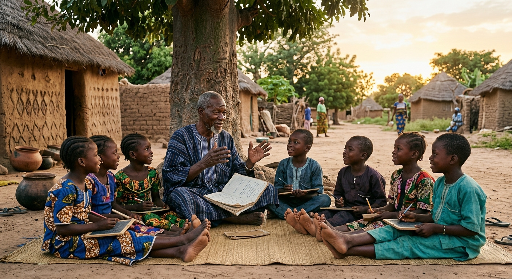

Berbères, commerçants de l’or, bâtisseurs de l’empire du Wagadou. Une culture fière, une langue préservée et une diaspora aux quatre coins du monde.
Capitale de l'empire à partir du IVe siècle, Koumbi Saleh comptait jusqu'à 30 000 habitants. Les fouilles archéologiques y ont révélé deux villes distinctes : une pour les musulmans commerçants, l'autre pour le roi soninké. Elle tomba au XIIIe siècle sous les coups de Soundiata Keïta.
Selon la tradition orale, Dinga Cissé, figure mythique venue d'Égypte (Assouan), est l'ancêtre fondateur de la dynastie régnante et l'instigateur de la puissance soninké. Son nom reste intimement lié à la naissance de Wagadou.
Fondé par le peuple Soninké, l'empire du Ghana (Wagadou) s'étendait sur le Mali, la Mauritanie et le Sénégal actuels. Sa capitale Koumbi Saleh était un carrefour commercial où l'or, le sel et les échanges transsahariens alimentaient sa prospérité.
L'empire disposait d'une administration centralisée, d'une armée redoutable (cavalerie) et d'un système fiscal élaboré. La cour impériale contrôlait les royaumes vassaux tout en respectant leur autonomie.
Amitié, solidarité clanique et respect des liens familiaux. L'entraide est une valeur sacrée.
Reconnaissance et gratitude. Remercier et honorer la parole donnée sont des marques de dignité.
Esprit d'entreprise et mobilité. Les Soninké ont toujours su maintenir des réseaux commerciaux et familiaux à travers le monde.
Fierté de préserver la langue sooninkanxanne et d'enseigner l'islam (les « modibo »).
« N’oublie jamais ta famille, c’est ton bouclier. »
— Proverbe soninké
Plusieurs ressources gratuites existent pour découvrir la langue :
Sources : Peace Corps Mauritanie, Live Lingua, Glosbe.
I ni ce — Merci pour votre intérêt, et que la mémoire de nos ancêtres guide votre route. 🧡
Outre les pays ouest‑africains (Mali, Sénégal, Mauritanie, Gambie, Guinée), d'importantes communautés soninkés vivent en France, Italie, Espagne, États‑Unis et au Canada. Cette dispersion s'est accentuée à partir du XXe siècle avec les migrations de travail.
Les associations culturelles, les cours de langue et les festivals (comme le FISO à Dakar) permettent aux jeunes générations de rester connectées à leurs racines. L'engagement d’Andu‑Xara s’inscrit dans ce mouvement.
✊🏿 « Quand les Américains ont marché sur la Lune, un Soninké était déjà là‑bas. » — dicton ouest‑africain.
Posez vos questions sur l'histoire, la langue ou la culture soninké à notre intelligence artificielle. XA IA répond en soninké et en français.
🧡 Ouvrir XA IA